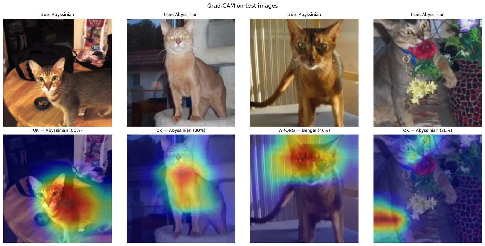

Cahier de revendications
Une négociation honnête : ce que je demande, et ce que j'apporte en échange.
Je revendique
- Un stage en IA générative ou en data science.
- Cinq mois, de novembre 2026 à avril 2027.
- En Île-de-France : j'habite à Villejuif.
J'apporte
- L'intégration d'un modèle de langage par API : sorties JSON structurées, garde-fous, évaluation des réponses.
- Python, SQL, Scikit-learn et PyTorch, avec des projets publiés sur GitHub.
- L'habitude de développer avec des agents IA de codage (Codex, Claude Code).
- Un anglais bilingue (TOEIC 965) et un semestre d'études en Malaisie.
Bilan des actions menées
Quatre projets, avec leurs chiffres. Le code est en ligne pour vérifier.
-
2026
Pet Breed Classifier : classification d'images en PyTorch
Python, PyTorch, torchvision, Grad-CAM · projet personnelResNet-34 pré-entraîné puis fine-tuné sur 37 races de chiens et de chats (Oxford-IIIT Pet). Il atteint 91,3 % top-1 et 0,91 de F1 macro, contre 31,3 % pour un CNN entraîné from scratch avec le même budget. Analyse des erreurs par classe et contrôle par Grad-CAM.

Grad-CAM sur des images de test. La troisième colonne est une erreur : le modèle prédit Bengal (40 %) en s'appuyant surtout sur la tête. Ce genre de cas guide l'analyse des erreurs. 91,3 %top-1 sur 37 classes, contre 31,3 % sans pré-entraînement -
2025 › 2026
Assistant radiologue IA : modèle multimodal intégré par API
Python, VLM (Llama via API), FastAPI, Streamlit · projet EFREIAnalyse de radiographies thoraciques (CheXpert) par un modèle de langage multimodal. Sorties JSON structurées, garde-fous qui écartent les images inexploitables, évaluation (accuracy, F1, sensibilité, spécificité) et calibration des seuils de confiance. Prototype pédagogique, pas un outil de diagnostic.
JSONsorties structurées, garde-fous et seuils calibrés -
2026
UFC Fight Prediction : machine learning
Python, Scikit-learn · projet APU, MalaisieClassification binaire sur plus de 6 000 combats et 144 variables. Rééquilibrage par SMOTE, Random Forest optimisée par GridSearchCV (78 % d'accuracy, AUC 0,87), comparée à une régression logistique.
AUC 0,87Random Forest, 6 000+ combats -
2026
Agent cognitif artificiel, sans LLM dans la boucle de décision
Python, NumPy, pytest · projet personnel de recherche, piloté avec CodexUn agent autonome dans un monde simulé : besoins, mémoire, modèle du monde, planification. Simulation déterministe, plus de 460 tests, prédictions écrites avant chaque expérience et ablations sur plusieurs graines. Au dernier pilote, le nombre de morts de l'agent a été divisé par deux.
460+tests automatisés, simulation déterministe
Outils de travail
Certification Google AI Professional Certificate obtenue en février 2026.
| IA générative et agents | Intégration d'un LLM par API, conception de prompts (sorties JSON, garde-fous), tests et évaluation des réponses, calibration. Développement avec des agents IA de codage (Codex, Claude Code). |
|---|---|
| Data science et ML | Classification, régression, Random Forest, SMOTE, GridSearchCV, métriques (accuracy, F1, ROC-AUC) avec Scikit-learn. Deep learning en PyTorch : CNN, transfer learning, Grad-CAM. |
| Programmation et data | Python, SQL, Pandas, NumPy, Matplotlib, Jupyter, C#, Java, JavaScript. APIs REST, FastAPI, Streamlit. Notions de Spark et d'ETL. |
| Bases de données | MySQL, modélisation MCD/MPD, SQL avancé. |
| Outils | Git, Linux, VS Code, Google Colab, Microsoft Azure, Excel avancé, Office 365. |
Parcours
Tunis, Paris, Kuala Lumpur : quelques ponts déjà construits entre une prépa, une école d'ingénieurs et un semestre à l'étranger.
-
sept. 2025 › juil. 2028
Cycle ingénieur, majeure T2IA (technologies immersives et IA)
EFREI Paris, Programme Grande École · VillejuifIntelligence artificielle, computer vision, deep learning, big data et technologies immersives (XR).
Bac+4en 2026-2027 -
janv. › mai 2026
Semestre d'échange international
Asia Pacific University (APU) · Kuala Lumpur, MalaisieCursus en anglais, dans une promotion de plus de 30 nationalités.
30+nationalités -
juil. › août 2025
Chargé de marketing digital, analyse de données (stage)
Stecia International · Google Analytics, Excel, PowerPointSuivi des KPIs sous Google Analytics et sur les réseaux sociaux, nettoyage des exports sous Excel, rapports en français et en anglais présentés à la direction.
FR / ENrapports KPIs pour la direction -
sept. 2023 › juil. 2025
Classe préparatoire MPSI-MP
ESPRIT Prépa · TunisMathématiques, physique et algorithmique, en formation intensive.
MPdeux ans de prépa -
2023
Baccalauréat général, mention très bien
Lycée René Descartes · TunisSpécialités mathématiques et physique-chimie.
TBmention
Langues et à côté
Échecs pour la stratégie ; football, musculation et MMA pour le reste. Huit pays visités, dont la Malaisie, les Philippines, la Turquie et l'Italie.
- Français
- langue maternelle
- Anglais
- bilingue, TOEIC 965
- Arabe
- natif
- Espagnol
- intermédiaire